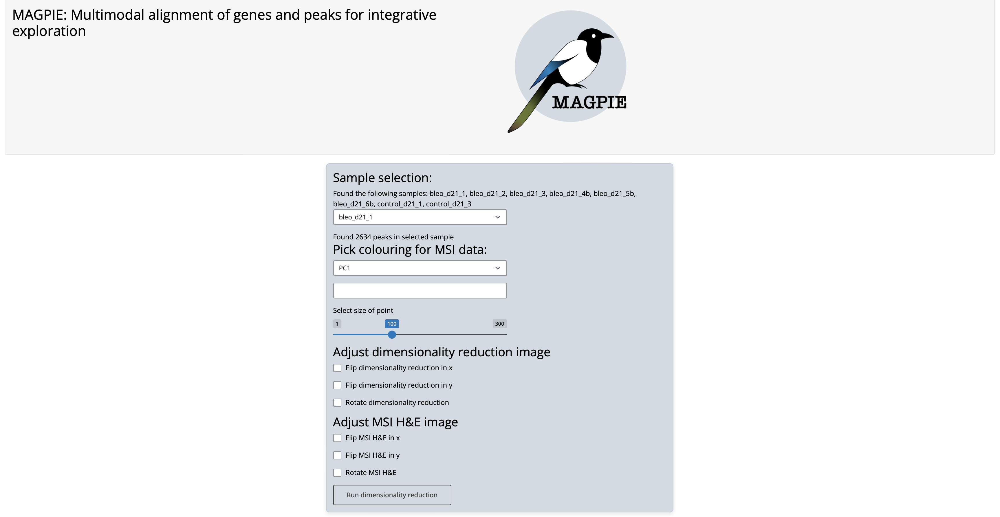
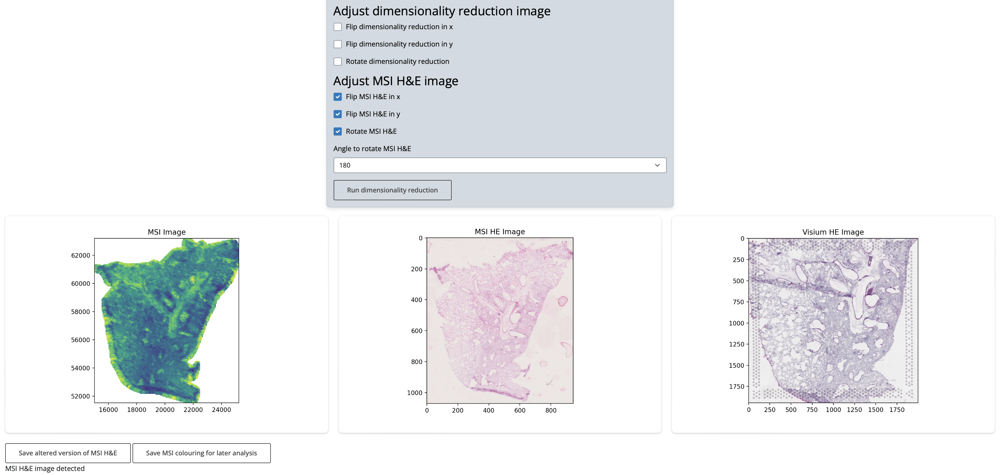
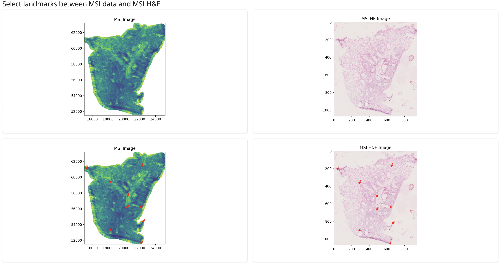
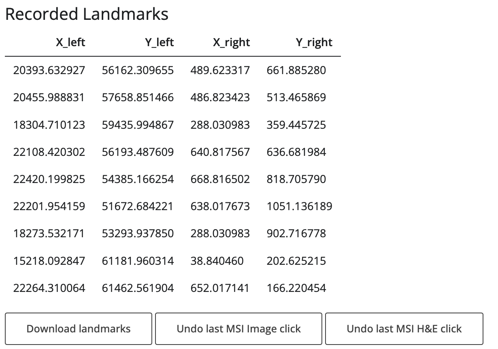
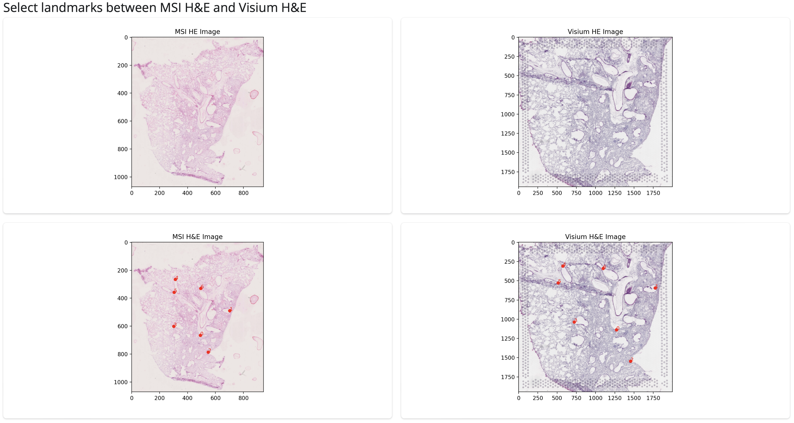
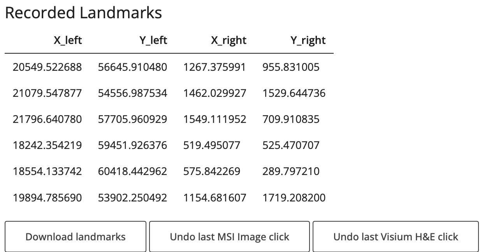

Magpie shiny app for landmark selection#
The magpie app provides a user-friendly interactive platform to select landmarks with which to perform coregistration. Once you have navigated to the correct working directory, described in [input structure page], you can start the app using
shiny run magpie_shiny_app.py
You can then work through each sample in turn, following these steps:
1. Create MSI data image#
The first step in identifying landmarks is to create an image from the MSI data. This image should enable the identification of histological features which can be matched against H&E images. The (x,y) coordinates of the sample are plotted out and coloured according to user selection. The MAGPIE pipeline offers several options on which data to colour each point, namely using the first principal component, using the first 3 components as RGB channels, and using the intensity of one peak. The dimensionality reduction can additionally be performed on all peaks (by default) or on a user-selected subset, e.g. on peaks related to a particular pathway.

As seen in the option box, to aid in coregistration, several transformations can also be made, including flips and rotations. If such alterations are performed these must be saved using the buttons provided so that the adjusted data is used for subsequent coregistration.

When all these options have been selected, the MSI data image is created and displayed next to Visium H&E image and MSI H&E image if provided.
2. If you have intermediate MSI image:#
a. Find landmarks from MSI data image to MSI H&E#
If an intermediate MSI image has been provided, the MSI data image is shown next to the MSI image and users can identify landmarks by clicking on the shown images. Landmarks are matched between images by number, which are displayed below.

Once the full set of landmarks has been identied, the table should be downloaded. The landmarks are automatically saved by the app into the required input structure for the MAGPIE snakemake pipeline.

b. Select landmarks from MSI image to Visium H&E#
Similarly to the previous step, the intermediate MSI image and the Visium H&E image are shown and landmarks identified in the same way.

Coregistration is then performed in a 2 step process, first projecting MSI datapoints onto the MSI H&E image then subsequently onto the Visium H&E image.
3. If you don’t have intermediate MSI image:#
a. Select landmarks dimensionality reduction to Visium H&E and DOWNLOAD#
If don’t have an intermediate MSI image, coregistration will instead be performed directly between the MSI data image and the Visium H&E, using the same process as above.

This whole process should be applied for each sample you wish to coregister. If you would prefer to use landmarks identified externally, for example using an automated tool like ELD, you can save these into the same structure, named:
landmarks_MSI2HE.csv (from MSI data image to MSI H&E)
landmarks_HE2HE.csv (from MSI H&E to Visium H&E) or
landmarks_noHE.csv (from MSI data image to Visium H&E)
In each case, the left two columns should be (x,y)-coordinates in the first image and the right (x,y)-coordinates in the second image.